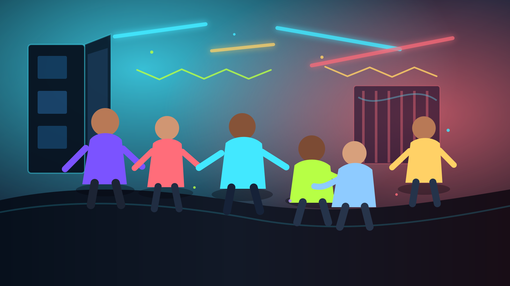

Arrive with standards.
If the party feels unsafe as soon as you arrive, you do not have to stay. Leaving early is more mature than pretending everything is fine.

PSHEE party safety guide
A party can be brilliant, but it is still worth having a plan. This guide is for staying confident, spotting danger early, and looking after people without turning the whole night into a lecture.
Before you go
This is not overthinking. It is just making sure one awkward moment does not become a serious problem. A good plan should be short enough to remember and clear enough to use.
Survival rules
If the party feels unsafe as soon as you arrive, you do not have to stay. Leaving early is more mature than pretending everything is fine.
Keep your drink with you, do not accept a drink you did not see being made, and do not feel rude for saying no. Spiking can happen to soft drinks too.
Agree that nobody disappears without telling someone. If a friend looks unwell, confused, panicked, or suddenly different, take it seriously.
The best excuse is the one you can actually use. "I need to go now" is enough. You do not owe a dramatic explanation.
Pressure, consent, and boundaries
Peer pressure can make bad decisions look normal. A real friend should not need you to drink, take something, kiss someone, send a photo, or stay longer than you want to. Consent has to be clear, freely given, and changeable.
If things go wrong
In the UK, call 999. If you are outside the UK, use the local emergency number.
Getting medical help is more important than worrying about trouble. The honest details help emergency services act faster.
Reliable information used